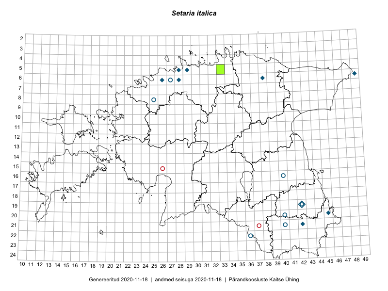

Setaria italica — itaalia kukeleib
Poaceae :: Setaria italica (L.) P.Beauv. (18)

Kaart põhineb 18 kirjel:
vaatlusi 2
herbaareksemplare 16
Taime kaasaegsed ja ajaloolised leiukohad asuvad 14 ruudus.
Tingmärgid ja ruutude arvud periooditi (U1 / V2 )
█ 2006–2020 (1/–)
◆/◇ 1971–2005 (6/5)
○ 1921–1970 (7/5)
+ kuni 1920 (0/0)
× hävinud (–/0)
? kaheldav (–/0)
| Ruut | Leidja(d) | Leiuaeg | Kirje |
|---|---|---|---|
| 06-26 | H. Aasamaa | 1985 | ruut/ala: Setaria italica (L.) P.Beauv. |
| 05-28 | H. Aasamaa, Tõnu Ploompuu | 1988 | ruut/ala: Setaria italica (L.) P.Beauv. |
| 06-28 | Tõnu Ploompuu | 1989-09-26 | TALL C007222: Setaria italica (L.) P.Beauv. |
| 06-49 | Tõnu Ploompuu | 1990-09-12 | TALL C007221: Setaria italica (L.) P.Beauv. |
| 06-38 | Marie Nelke | 1982-09-24 | TU302926: Setaria italica (L.) P.Beauv. |
| 16-40 | A. Remmel | 1964-09-18 | TU302927: Setaria italica (L.) P.Beauv. |
| 06-27 | A. Remmel | 1965-10-05 | TU302929: Setaria italica (L.) P.Beauv. |
| 21-40 | L. Pihlapuu | 1964-08-10 | TU302930: Setaria italica (L.) P.Beauv. |
| 22-36 | L. Pihlapuu | 1963-08-14 | TU302931: Setaria italica (L.) P.Beauv. |
| 20-40 | L. Pihlapuu | 1961-09-02 | TU302936: Setaria italica (L.) P.Beauv. |
| 20-40 | L. Pihlapuu | 1961-09-02 | TU302937: Setaria italica (L.) P.Beauv. |
| 05-29 | T. Udu | 1981-08-26 | TAM0073888: Setaria italica (L.) P.Beauv. |
| 05-29 | T. Udu | 1981-08-26 | TAM0073889: Setaria italica (L.) P.Beauv. |
| 19-42 | M. Kask | 1970-08-15 | TAA0109073: Setaria italica (L.) P.Beauv. |
| 06-28 | Toomas Kukk | 1989-08-06 | TAA0109076: Setaria italica (L.) P.Beauv. |
| 08-25 | M. Lätt, S. Pärn | 1960-08-10 | TAA0109077: Setaria italica (L.) P.Beauv. |
| 08-25 | Vilma Kuusk, K. Lang, A. Lõhmus | 1960-08-10 | TAA0109078: Setaria italica (L.) P.Beauv. |
| 05-33 | Ott Luuk, Hannes Pehlak | 2016-07-27 | TAA0144853: Setaria italica (L.) P.Beauv. |
Ruutude arv uue atlase andmekogu järgi. Muuhulgas arvestab vanemat herbaariumi, 2005. aasta atlase välitöölehtedelt uuesti digitaliseeritud andmeid jne. Uue atlase andmekogust pärinevad andmed on kaardile kantud siniste sümbolitega.↩︎
Ruutude arv 2005. aasta atlase (Kukk, T., Kull, T., Eesti taimede levikuatlas. Eesti Maaülikool, Põllumajandus- ja Keskkonnainstituut, Tartu, 2005) järgi. Andmeallikana on kasutatud levik.exe programmi, kus igas ruudus on registreeritud vaid uusim leid. Seetõttu on vanemate perioodide kohta andmed puudulikud. Kasutatud levik.exe andmestikus leidub mõningaid kõrvalekaldeid atlase trükis ilmunud versioonist, sagedamini tarnade ja käpaliste seas. Lisaks leidub selles andmestikus valik liike (peamiselt väheste leidudega tulnuktaimed), mille kaarte trükis ei avaldatud. Vana atlase andmed ruutudest, milles ei ole uue atlase andmekogus leide enne 2006. aastat, on kaardil esitatud punaste sümbolitega. Vana atlase andmetel hävinud ja kaheldavaid leiukohti pole hilisemate (taas)leidude põhjal korrigeeritud.↩︎